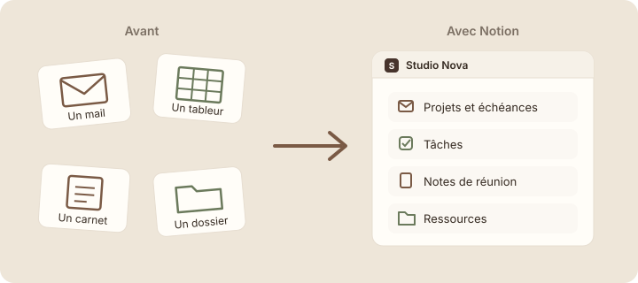

À quoi sert Notion
Étape 1 : comprendre
Au travail, tes informations sont souvent dispersées : une date importante dans un mail, un suivi dans un fichier Excel, des notes de réunion dans un carnet, un document sur un disque partagé. Quand tu en as besoin, il faut chercher partout. Notion sert justement à réunir ces informations au même endroit.
Notion est une application pour écrire et organiser des informations. Tu peux l'utiliser dans un navigateur web, dans l'application pour ordinateur ou sur ton téléphone : tu retrouves partout le même contenu.
Dans Notion, tout se range dans des pages. Une page peut contenir du texte, des listes, des tâches, des images, des liens… et même d'autres pages. Tu découvriras les pages en détail au module 2.
Pense à un classeur. Tu y ranges des feuilles, séparées par des intercalaires. Notion, c'est un classeur numérique où chaque feuille peut contenir d'autres feuilles, et que toute ton équipe peut ouvrir en même temps.

Ce que tu peux faire avec Notion
- Prendre des notes de réunion et les retrouver facilement.
- Suivre tes tâches et voir ce qui reste à faire.
- Suivre des projets : qui s'en occupe, où on en est, pour quand.
- Rassembler les documents et liens utiles à l'équipe.
- Partager tout cela avec tes collègues, sans envoyer de pièce jointe.
Attention : Notion n'est ni « un Word en ligne », ni « un Excel ». Il sait écrire comme un traitement de texte et ranger comme un tableur, mais il fait surtout autre chose : il relie tes informations entre elles. Ne cherche pas à recopier tes anciens fichiers tels quels ; tu vas apprendre une autre façon de ranger.
Studio Nova, avant et après Notion
Studio Nova est une petite agence créative : elle réalise des sites web, des identités visuelles et des campagnes. Emma est responsable de projet, Lucas fait partie de l'équipe. Voici leur quotidien avant Notion, et ce que tu vas construire pour eux pendant la formation.
| Avant | Après : ce que tu vas construire |
|---|---|
| Les échéances des projets sont perdues dans les mails d'Emma. | Une base « Projets » montre chaque projet avec son statut, son responsable et son échéance. |
| La liste des tâches est dans un fichier Excel que Lucas ne trouve jamais à jour. | Une liste « Tâches », la même pour toute l'équipe, toujours à jour. |
| Les notes de réunion sont dans les carnets de chacun. | Une page « Notes & réunions » où chaque réunion a sa page. |
| Les logos et documents sont répartis dans trois dossiers différents. | Une page « Ressources » qui rassemble les liens et fichiers utiles. |
| Personne ne sait quelles sont les priorités de la semaine. | Une page « Accueil » qui les affiche dès qu'on ouvre l'espace. |
Tu ne vas pas tout construire d'un coup : chaque partie apparaîtra au moment où tu apprendras la notion qui va avec.
Ouvrir Notion
- Ouvre ton navigateur et va sur notion.so, ou lance l'application Notion si elle est installée sur ton ordinateur.
- Clique sur « Se connecter ».
- Connecte-toi avec ton adresse e-mail professionnelle, ou avec le compte que ton entreprise t'a indiqué.
Capture d'écran Notion Page de connexion de Notion · images/captures/m01-connexion.png
- Si Notion te pose quelques questions d'accueil (ton métier, ton usage), réponds simplement ou passe-les : elles ne changent rien pour la suite de la formation.
- Tu arrives dans Notion. Ne touche à rien pour l'instant : la prochaine leçon t'explique tout ce que tu vois à l'écran.
Capture d'écran Notion Écran d'arrivée après la connexion · images/captures/m01-arrivee.png
Astuce : Notion peut s'afficher en français. Si ton interface est en anglais, change la langue dans les paramètres, rubrique des préférences de langue. Les noms des boutons cités dans cette formation sont ceux de la version française.
Exercice · dans Notion
Première connexion
- Connecte-toi à Notion.
- Tout en bas de la barre latérale, à gauche de l'écran, repère le nom de ton espace de travail.
- Note-le : tu en auras besoin dans la leçon 1.3.
Résultat attendu : tu es connecté à Notion et tu connais le nom de ton espace de travail, affiché en bas de la barre latérale.
À retenir
Objectif de la leçon : tu sais maintenant expliquer en une phrase ce qu'est Notion et dans quelles situations il t'aide au travail.
- Notion est un espace de travail numérique pour écrire, organiser et partager ses informations au même endroit.
- Tout y est rangé dans des pages, et une page peut contenir d'autres pages.
- Notion sert à toute l'équipe : chacun voit la même information, à jour.
Choisis une réponse avant de valider.
Notion sait écrire du texte et ranger des informations en lignes, mais ce n'est ni un simple traitement de texte ni un tableur. Sa force, c'est de réunir et relier toutes les informations d'une équipe au même endroit.
Choisis une réponse avant de valider.
Dans Notion, il n'existe qu'une seule liste, partagée par toute l'équipe. Quand Emma la modifie, Lucas voit le changement tout de suite. Il n'y a plus de copies différentes qui circulent par mail.